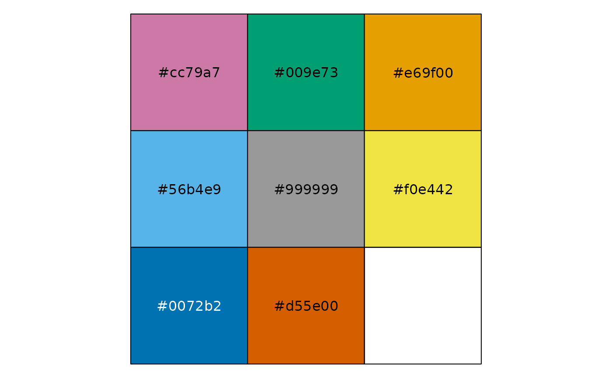

Plot methods defined in the ggplotFL package make use by default of a palette with a high contrast, useful to separate time series or categories. The palette consist of seven colours: red, blue, green, violet, orange, yellow and brown. This palette can be inspected at the [colorbrewe2.org site](http://colorbrewer2.org/?type=qualitative&scheme=Set1&n=7#type=qualitative&scheme=Set1&n=7).
flpalette
flpalette_colours(n = length(flpalette))
flpalette_grads(palette = flpalette, reverse = FALSE, ...)
scale_colour_flr(palette = flpalette, discrete = TRUE, reverse = FALSE, ...)An object of class character of length 8.
Number of colours or individual colours to return, or number of colours to interpolate.
Palette subset to create a gradual scale from, defaults to *flpalette*.
Should the palette be reversed, FALSE.
Elements to subset from palette, by name or position.
Is the palette to be applied to a discrete variable, TRUE.
A named vector of colors and HEX codes, or a function to obtain a gradient of colors fo a given length.
The palette is accessible as a named vector, *flpalette*. Two functions are also available to manipualte the palette. One to extract a subset of the palette, *flpalette_colours*, and another to create a gradation of colours between two or more of the palette colours, *flpalette_grads*.
FLComp
# CHECK flpalette
flpalette
#> [1] "#cc79a7" "#009e73" "#e69f00" "#56b4e9" "#999999" "#f0e442" "#0072b2"
#> [8] "#d55e00"
scales::show_col(flpalette)

flpalette_colours()
#> [1] "#cc79a7" "#009e73" "#e69f00" "#56b4e9" "#999999" "#f0e442" "#0072b2"
#> [8] "#d55e00"
flpalette_colours(5)
#> [1] "#cc79a7" "#009e73" "#e69f00" "#56b4e9" "#999999"
flpalette_colours(2:3)
#> [1] "#cc79a7" "#009e73"
flpalette_grads(flpalette_colours(3))(20)
#> [1] "#CC79A7" "#B67CA1" "#A1809C" "#8B8496" "#768891" "#608C8B" "#4B9086"
#> [8] "#359480" "#20987B" "#0A9C75" "#0C9E6C" "#249E60" "#3C9E54" "#549E48"
#> [15] "#6C9E3C" "#859E30" "#9D9E24" "#B59E18" "#CD9E0C" "#E69F00"